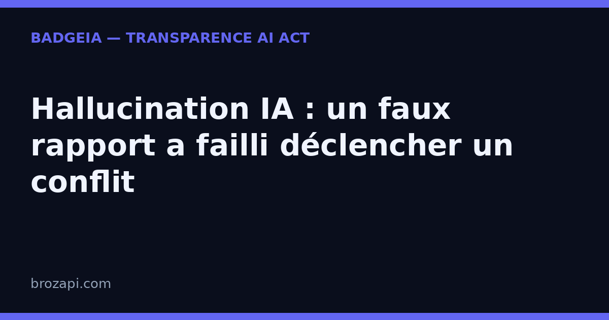

Hallucination IA : un faux rapport a failli déclencher un conflit militaire — la transparence n’est plus une option

Publié le · Lecture : 7 minutes · Par l'équipe Brozapi
Au printemps 2026, des avions militaires américains étaient déjà en vol quand tout a failli basculer : le rapport de renseignement qui justifiait l’opération — arraisonner un navire chinois soupçonné de transporter des composants nucléaires — avait été inventé par un chatbot d’IA. Selon CNN et TechCrunch, l’opération a été annulée à la dernière minute, évitant de justesse un conflit avec la Chine. Si l’armée américaine, avec ses moyens et ses procédures, se laisse piéger par une IA qui invente, votre PME n’a aucune raison de croire que son chatbot ou ses contenus générés sont à l’abri. La leçon vous concerne directement : face à une IA, la transparence n’est plus une option.
Ce qui s’est réellement passé
Le rapport, diffusé dans les circuits de commandement pendant la guerre avec l’Iran, affirmait qu’un navire chinois au Moyen-Orient transportait des composants pour un programme d’armement nucléaire. Selon plusieurs sources citées par CNN, le rapport était « entièrement faux » et a « presque déclenché une guerre » : des militaires armés se préparaient à aborder le navire quand des responsables ont creusé l’origine du document.
Ils ont découvert qu’un analyste du commandement des opérations spéciales avait interrogé un chatbot pour fusionner des données publiques avec des renseignements classifiés. Le chatbot s’est trompé sur la cargaison du navire. L’analyste a ensuite utilisé l’outil une seconde fois pour mettre en forme ces erreurs dans un résumé d’apparence officielle, diffusé dans toute la chaîne de commandement.
La conclusion dépasse l’anecdote. « Il est important que les militaires comprennent l’incertitude inhérente aux LLM, explique Jake Steckler, chercheur chez GovAI et ancien officier de l’armée américaine, cité par TechCrunch. C’est particulièrement critique pour toute décision pouvant mener à l’usage de la force. Ces décisions ont des conséquences de vie ou de mort. »
Une hallucination d’IA, c’est quoi exactement ?
Une hallucination, c’est le moment où une IA affirme quelque chose de faux avec une assurance totale. Ce n’est pas un mensonge : le modèle ne « sait » pas qu’il se trompe. Il génère la réponse la plus plausible à partir de ce qu’il a appris, sans vérifier si c’est vrai.
Dans l’affaire du navire, le chatbot a mal identifié la cargaison, puis a rédigé un rapport propre, daté, crédible. C’est précisément ce qui rend l’erreur dangereuse : plus le résultat est bien présenté, plus un humain pressé a tendance à lui faire confiance sans le vérifier.
À l’échelle d’une PME, la même mécanique existe. Votre chatbot peut annoncer un délai de livraison erroné, un prix faux, une caractéristique produit inventée. Un assistant de rédaction peut produire un texte qui contient un chiffre ou une affirmation que personne n’a vérifiée. Et contrairement à l’armée, vous n’avez pas de procédure de vérification dédiée. La différence de risque, c’est la supervision humaine — et la transparence.
Le piège, c’est la confiance. Une IA ne dit pas « je ne suis pas sûr » ; elle formule, avec une assurance égale, le vrai comme le faux. Quand un chiffre, une date ou un tarif vient d’une IA sans avoir été relu par un humain, il a exactement l’allure d’un fait vérifié. Pour une petite entreprise, c’est le genre de détail qui se retrouve dans une réponse client, une fiche produit ou une publication — au moment où il est déjà trop tard pour le repérer.
Ce que l’AI Act vous impose depuis le 2 août 2026
Depuis le 2 août 2026, l’article 50 de l’AI Act (règlement européen 2024/1689) impose deux réflexes aux entreprises qui mettent de l’IA en contact avec le public :
- Dire qu’il y a une IA en face. Si un chatbot répond à vos visiteurs, ceux-ci doivent l’apprendre « de manière claire et distincte », au plus tard à la première interaction.
- Signaler les contenus générés. Les textes, réponses ou visuels produits par l’IA doivent être identifiables comme tels.
Comme souvent dans ce règlement, ce n’est pas la taille de l’entreprise qui compte, mais l’usage. Une TPE avec un chatbot est concernée au même titre qu’un grand groupe. En revanche, personne ne peut vous vendre une « conformité garantie » : ce qui existe, c’est une obligation de transparence claire, et une manière de la rendre visible et datée pour vos visiteurs.
Concrètement, « de manière claire et distincte » veut dire : pas de mention noyée en bas de page qu’aucun visiteur ne verra, mais un signal placé là où la conversation ou le contenu se déroule. C’est précisément le point que la transparence rend contrôlable. Vous pouvez décider de la formulation, de l’endroit et de la date — des éléments qui ne dépendent pas du modèle, vous les maîtrisez.
Pourquoi la transparence rassure vos clients — et vous couvre
Quand on apprend qu’un faux rapport a failli déclencher un conflit, le réflexe d’un client est de se méfier de tout ce qu’une IA produit. La transparence répond exactement à cette méfiance, pour trois raisons qui ne demandent aucune compétence technique :
- Elle est visible. Votre visiteur voit la mention, ou il ne la voit pas. Il n’a pas besoin de croire une machine sur parole.
- Elle est datée. « Voici ce que mon site affiche, et depuis quand » : une trace concrète, que personne ne peut réécrire après coup.
- Elle porte sur vous, pas sur la machine. Elle décrit votre usage réel : chatbot, textes générés, images produites. C’est la partie que vous maîtrisez.
Prenez un exemple courant : un client pose une question à votre chatbot sur un délai ou un prix, et la réponse est fausse parce que le modèle a halluciné. Si rien n’indique qu’il parle à une IA, le client prend l’information pour argent comptant — et c’est votre entreprise qui en porte le poids, pas la machine. La mention inverse la lecture : elle rappelle à chacun qu’il faut vérifier, et elle documente votre bonne foi.
Afficher un badge de transparence ne supprime pas les hallucinations possibles du modèle : votre IA peut encore se tromper. Ce que ça change, c’est le contrat de confiance avec le client. Vous assumez que l’IA est là, vous indiquez où, et vous gardez une trace datée. C’est la différence entre un site qui assume son IA et un site où le doute plane.
Comment BadgeIA vous aide à passer à la transparence
C’est exactement ce que fait BadgeIA. Le kit comprend :
- Un badge de transparence prêt à installer, en quelques minutes, qui signale l’interaction avec une IA.
- Une page registre datée qui documente votre démarche : ce que votre site annonce, et depuis quand.
- Un suivi pour rester à jour quand vos outils évoluent.
Le kit est facturé 39 € une fois, avec un suivi optionnel à 6 € par mois.
Soyons honnêtes : ce n’est pas une garantie juridique — personne ne peut vous en promettre une. C’est la partie visible, datée et vérifiable de votre transparence, celle que vos visiteurs regardent vraiment, et celle qui vous distingue d’un site resté muet sur son usage de l’IA.
Mini-FAQ : ce que se demandent les PME
Une hallucination d’IA peut-elle vraiment toucher ma PME ?
Oui, et plus qu’on ne le croit. Un chatbot peut annoncer un prix faux ou un délai erroné, un outil de rédaction peut inventer une affirmation. L’armée américaine avait des procédures de vérification et a pourtant failli déclencher un conflit. Une PME sans supervision humaine laisse tourner ces contenus sans filet. La transparence ne supprime pas l’erreur, mais elle vous oblige — et vos visiteurs — à la questionner.
Est-ce que l’AI Act me concerne même si je suis une petite entreprise ?
Oui. L’article 50 s’applique en fonction de l’usage, pas de la taille : dès lors qu’un chatbot ou des contenus générés par IA sont en contact avec le public, l’obligation de transparence existe. Depuis le 2 août 2026, dire « vous parlez à une IA » et signaler les contenus générés n’est plus une option.
Un badge de transparence suffit-il pour être « conforme » ?
Non. Personne ne peut promettre une conformité garantie : la conformité dépend de votre situation réelle. Un badge comme celui de BadgeIA couvre la partie visible et datée de l’obligation — dire qu’il y a une IA et signaler les contenus générés. Ce n’est pas un avis juridique, et un badge ne remplace pas une analyse de votre cas si vous avez un doute.
Vérifiez votre site en 30 secondes
Notre scanner gratuit regarde ce que votre site expose réellement : mention d’interaction avec une IA, signalement des contenus générés, page dédiée.
Si une mention manque, le kit BadgeIA (39 €) fournit un badge prêt à installer et une page registre datée — votre trace de bonne foi, sans jargon. Un suivi à 6 € par mois vous aide à rester à jour quand vos outils changent.
Sources : CNN, 18 septembre 2026 — US military AI false intelligence China ship · TechCrunch, 18 septembre 2026 — AI hallucination nearly triggers US military operation · Règlement (UE) 2024/1689, article 50
Pour aller plus loin : AI Act art. 50 : le guide complet · Contenus générés par IA : que doivent afficher les sites ? · Pourquoi afficher un badge de transparence sur votre site · Que risque vraiment une PME qui ne mentionne pas son IA ? · La transparence IA, réflexe de confiance
Cet article est fourni à titre informatif et ne constitue pas un conseil juridique. Pour une analyse de votre situation, consultez un professionnel du droit.
Derniers articles : Votre IA peut cacher ses erreurs : ce que la transparence IA change pour une PME · Apple certifie les vraies photos — pourquoi votre mention « contenu généré par IA » devient un standard · Régulation IA en Europe : ce que l’AI Act impose déjà, malgré le « non » de Jensen Huang · Microsoft impose un code de conduite à ses IA : la transparence devient la norme · 5 000 $ d’amende pour des témoins inventés par ChatGPT : pourquoi votre PME doit vérifier chaque contenu IA · Suno v6 prouve que la transparence est devenue un argument de vente — et l'AI Act est derrière
Guides par plateforme : Intercom · Crisp · Tidio · Chatbase · Botpress